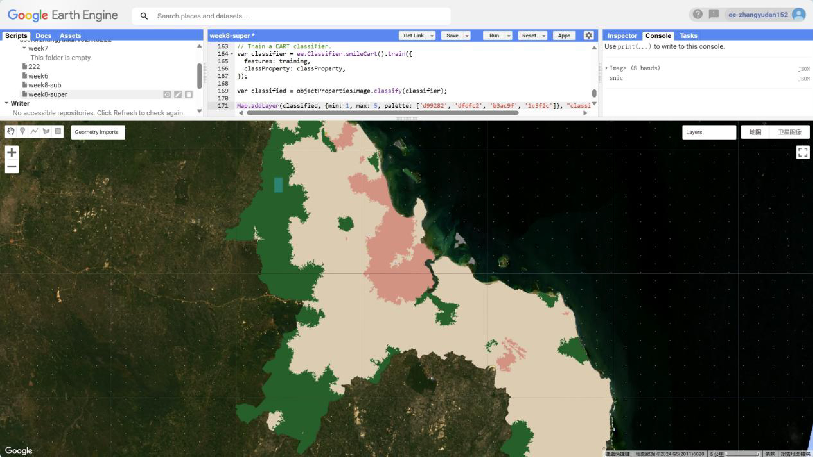
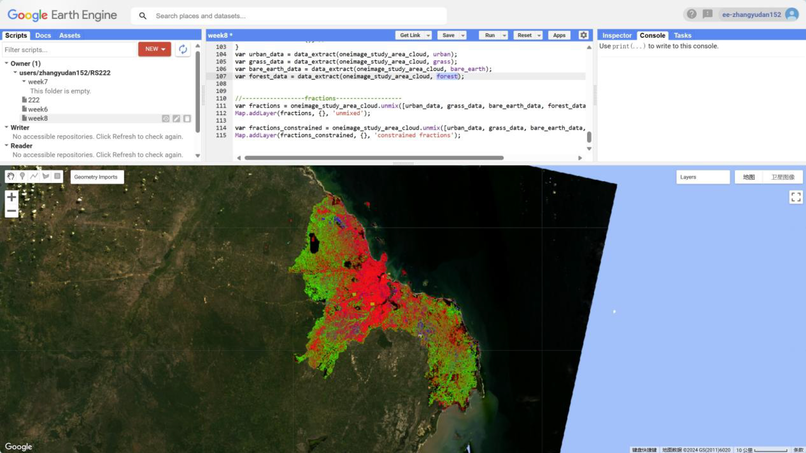
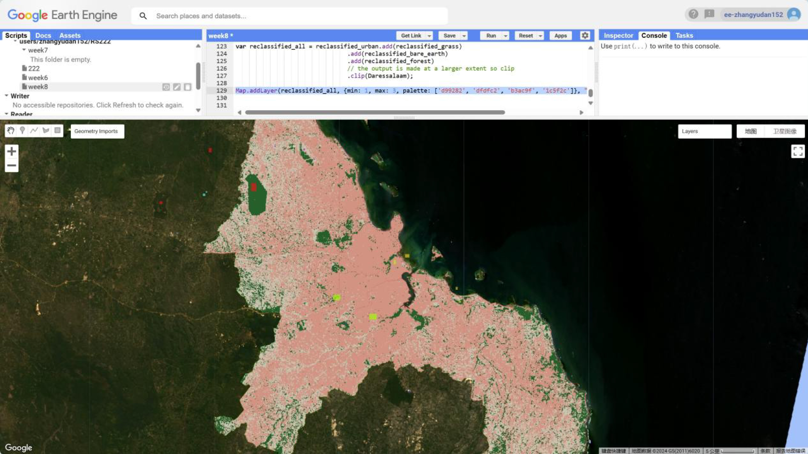
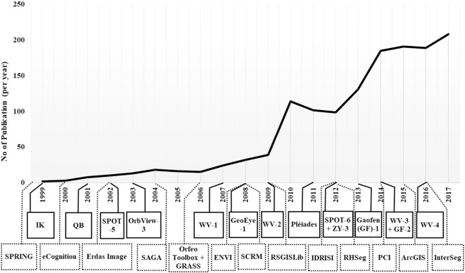

7 week8
7.1 Summary
7.1.1 Advanced Classification Methods
We have continued to learn about land cover classification methods and also learnt to cope with different data, compared to what we learnt last week, this week is mainly about how to deal with different objects.
- Object-Based Image Analysis (OBIA)
OBIA is based on the geometrical and spectral properties of objects in an image for analysis and classification.
The main principle of the method is related to hyperpixels. It aggregates neighbouring image elements with similar properties into hyperpixels, which are used to represent the actual objects on the ground. The hyperpixels are in turn generated by the Simple Linear Iterative Clustering algorithm. This algorithm calculates spatial distances and colour differences among regular points on the image, which can determine which image elements should be combined into a single hyperpixel, typically after 4-10 iterations, to better reflect the shape and size of the target object.

- Advantages:
| 1. | Can more accurately represent the actual objects on the ground such as buildings, more accurate classification results |
| 2. | Has a variety of classifiers and software packages that can use different algorithms to provide more complex analyses and functions, such as Supercells package can use any distance measure |
- Limitations:
| 1. | Does not take into account the connectivity between superpixels, which may lead to very small and difficult to interpret classification regions |
| 2. | using the Euclidean distance metric limits the suitable data types and classification needs. |
| 3. | Performed in LAB colour space, which requires conversion of the raw data, affecting the accuracy of the classification. |
- Subpixel analysis
This method is mainly used when a single pixel contains multiple land cover types and is also called spectral mixture analysis (SMA). Rather than assigning an entire pixel to one dominant land cover class, it estimates the proportion of each land cover type in the pixel.
The basic principle is that the reflectance captured by a pixel is a combination of the reflectance of all land cover types (endmembers) within that pixel. By using the purely spectral characteristics of these endmembers, the analysis attempts to reverse derive the proportion of each endmembers contribution to the observed pixel value.


- Advantages:
| 1. | Provides a more detailed understanding of land cover by disaggregating the components within a pixel, further effectively improving the resolution of land cover information compared to full pixel classification |
| 2. | better capture minor changes in the landscape as the land is monitored over time |
- Limitations:
| 1. | Computationally complex, the more end-elements considered the more computationally intensive |
| 2. | Accuracy depends on the purity of the end elements. Impure spectral features can lead to unreliable results |
| 3. | Analyses are limited by spectral library data, so comprehensive spectral libraries are needed as much as possible |
- Assessment of classification accuracy
- Confusion Matrix
Confusion matrices are often used when performing accuracy assessments, being able to compare the classification results with an independent dataset of real ground conditions, providing a detailed view of the classification performance including: true positives (TP), false positives (FP), true negatives (TN) and false negatives (FN). And the accuracy values can be obtained through the confusion matrix.
- Classification of accuracy values
| Accuracy value | Definition |
|---|---|
| Producer’s accuracy | A measure of accuracy from the producer’s perspective. Indicates the ratio of pixels that are correctly classified to all relevant pixels in that category (i.e., the sum of true positives and false negatives) |
| User accuracy | Measures the ratio of correctly classified pixels to all pixels classified as that category (i.e., the sum of true positives and false positives). User accuracy is concerned with whether a pixel classified as a category actually belongs to that category |
| Overall Accuracy | Indicates the proportion of correctly classified pixels across all categories and reflects the overall performance of the classification model |
In fact, application scenarios as well as requirements have to be considered when assessing the accuracy of classification models. For example, for land cover change detection, high overall accuracy may be most important. And for environmental monitoring, user accuracy may be more critical.
Generally the Kappa coefficient can be used to assess the difference between classification accuracy and random classification accuracy, with higher values indicating better classification accuracy and greater likelihood of exceeding random classification. However, it has also been argued (Foody 2020) that the Kappa coefficient does not directly reflect accuracy; it is simply a measure of classification consistency beyond the random level, and can indicate either consistency obtained by chance alone or almost perfect consistency, and the interpretation of its true significance is often ambiguous.
- Validation data with cross-validation methods
Leave-One-Out Cross-Validation
The number of folds is equal to the number of data points, and each iteration uses all but one data point for training and the missed points for testing. While maximising the amount of data used for training, the number of iterations is high and not practical for large datasets.
Spatial cross-validation
Due to the first law of geography (observations close to each other are more likely to be similar), the method spatially partitions the data so that the training and validation sets are not geographically intersected to avoid due to spatial autocorrelation.
| Characteristic | Definition |
|---|---|
| 1. Advantage | in reducing the risk of overfitting the model to spatially similar data |
| 2. Requirement | Sufficient data distribution is needed to create meaningful spatial partitions |
| 3. Optimisation | the hyperparameters of the SVM classifier need to be tuned to balance the model complexity and generalisation capabilities |
| 4. Multiple iterations | Multiple rounds of spatial partitioning and validation are required to ensure robustness |
7.2 Applications
In conjunction with this week’s classification method, I have taken a look at its position in the development of remote sensing applications.
Land use information has been extracted in different ways at different times in the development of remote sensing technology. In the early days, images captured by remote sensing sensors had larger pixels than ground features at low and medium resolution, so subpixel analysis was needed to respond to land class features(Blaschke 2010). However, in the gradual increase of high-resolution imagery applications, the pixel-based analysis method is not able to respond to the spatial variations of land cover, so object-based image analysis becomes an effective method in high spatial resolution imagery applications. Due to its spectral, spatial, textural, and topological characteristics, and its ability to respond to geographic information, there has been a gradual increase in the number of studies and techniques related to geographic object-based image analysis (GEOBIA) (Rees 1989).
Manne et al. (Suneetha et al. 2020) used object-based image analysis with three separate stages of segmentation, generation of training data and final classification to obtain the range of forestry based on remote sensing satellite images such as Deimos-2 and Cartosat-1. As learnt in the course. The measurement of the classification results was determined from four main aspects, namely, Producers Accuracy, Users Accuracy, Overall Accuracy and Kappa coefficient value. Although the accuracy value of the data in Cartosat-1 is low and the interpretation of the Kappa coefficient is debatable. However, it can show the usefulness of the method for multispectral image classification and can support the real needs such as ecological monitoring.


Hossain et al. (Hossain & Chen 2019) summarised the research trends in image analysis based on geographic objects, and were able to find that the ability to match objects segmented from images with meaningful geographic objects is the key challenge in this field, and we can intuitively see that the cases and tools for this classification technique are improving significantly, so I also believe that continuous improvement of image segmentation techniques is also the future direction of research.

7.3 Reflection
After two weeks of learning about the classification process in remote sensing in detail, last week focused on the basic methods of classification such as CART, Random Forest and Support Vector Machines. This was mainly about classifying for single pixels, and this week further emphasised on classifying for super-pixel cases, and sub-pixel cases, as a step-by-step process. It had not occurred to me last week that there would also be classification for different objects, and this week’s classification study has inspired me. Indeed, in practical remote sensing applications, the needs are constantly increasing, so the classification methods are constantly improving. I think in the future, continue to improve the robustness of multispectral image segmentation algorithms, improve the edge, time and other feature sets, and improve the classification rules of decision trees(Liu et al. 2006) will have continued research value in the field, and I also hope that more learning based on the object to complete the ecological monitoring aspects of the work, which is greatly beneficial to sustainable development and disaster monitoring.
Meanwhile after a few weeks of systematic learning, we had a general understanding of the process of processing remote sensing data once we got it, just like the process of classification, which is from class definition, preprocessing, training, pixel assignment, and then accuracy assessment, and in the practical exercises, we also used GEE to understand how most of them work, which helped us to understand what we had learnt in the class. I also learnt through searching for applications that despite the different objects being classified, the classification tool methods used (e.g. decision trees) are common, which more than anything else allowed me to tie the two weeks of classes together.
This week’s course also brought us a lot of dialectical thinking, through the study of accuracy verification I learnt that the starting point for thinking about a problem and evaluating the results is different for different objects (producers and users), and that we have different criteria for evaluating the results in different application scenarios. As in the example of kappa coefficients, their interpretative and imperative nature is not entirely certain, despite the fact that many scholars see them as agreed-upon steps. I think this is the idea that the instructor has been instilling in this course, to maintain CRITICAL THINKING, even in published articles.
7.4 References
Blaschke, T., 2010. Object based image analysis for remote sensing, ISPRS Journal of Photogrammetry and Remote Sensing, årg. 65, nr. 1, s. 2–16.
Foody, G.M., 2020. Explaining the unsuitability of the kappa coefficient in the assessment and comparison of the accuracy of thematic maps obtained by image classification, Remote Sensing of Environment, årg. 239, s. 111630.
Hossain, M.D. & Chen, D., 2019. Segmentation for Object-Based Image Analysis (OBIA): A review of algorithms and challenges from remote sensing perspective, ISPRS Journal of Photogrammetry and Remote Sensing, årg. 150, s. 115–134.
Liu, Y. et al., 2006. Review of remotely sensed imagery classification patterns based on object-oriented image analysis, Chinese Geographical Science, årg. 16, nr. 3, s. 282–288.
Rees, G., 1989. Remote Sensing - Digital image processing in remote sensing., Polar Record, årg. 25, nr. 152, s. 67–67.
Suneetha, M. et al., 2020. Object based Classification of Multispectral Remote Sensing Images for Forestry Applications [Online]. New York, NY, USA: Association for Computing Machinery.